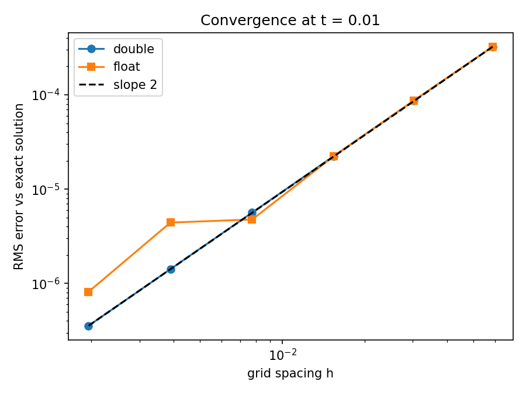
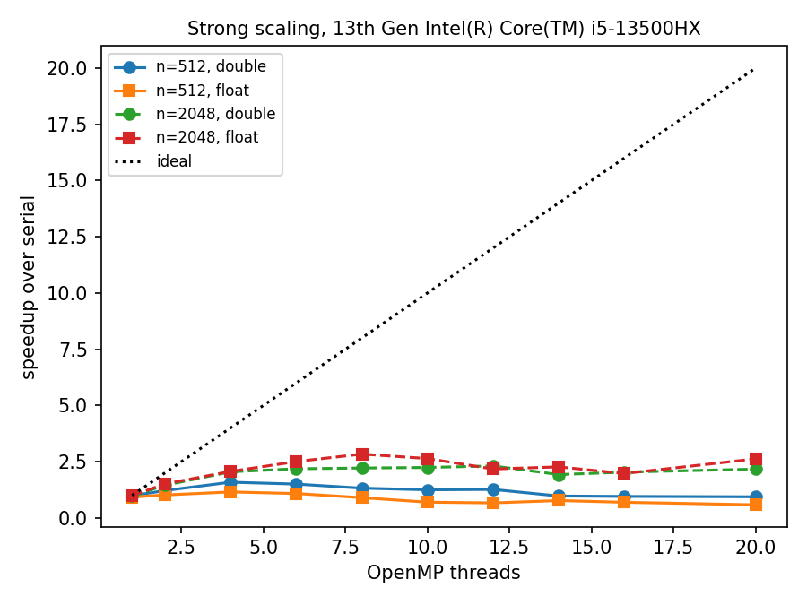
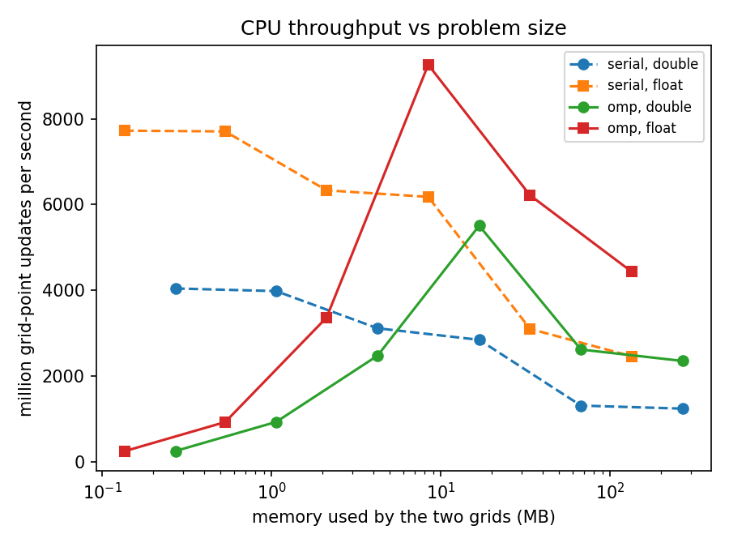
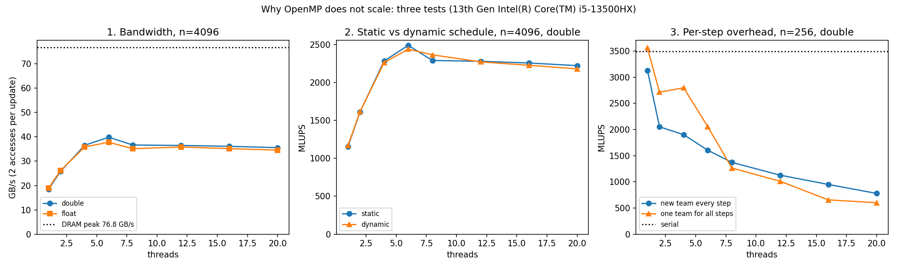
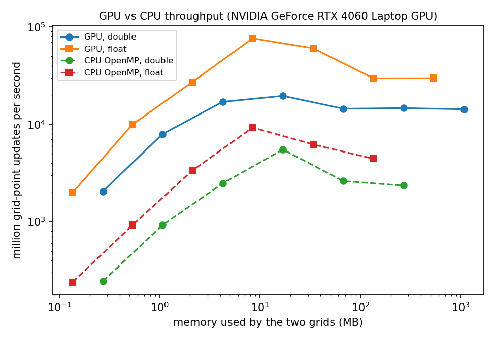

Abstract. I solve the two-dimensional heat equation with an explicit finite-difference scheme and implement it three ways: serially, with OpenMP on a 20-thread laptop CPU, and with CUDA on a laptop GPU, each in single and double precision. A small benchmarking tool runs every configuration and checks every run against the exact solution. Three questions are asked. Accuracy: the scheme converges at second order in double precision, while single precision stalls near 10−6 once rounding error accumulated over thousands of steps overtakes the discretisation error. CPU scaling: 20 threads are only 2–3 times faster than one; of three candidate explanations, testing confirms memory bandwidth, rejects imbalance between the CPU's fast and slow cores, and partly confirms per-step synchronisation cost. GPU: on large grids the GPU is 6.6–6.9 times faster than the CPU, close to the ratio of their memory bandwidths, and double precision is only 2 times slower than single although the GPU's double-precision arithmetic is 64 times slower. All three answers point the same way: for this computation the cost is in moving data, not in arithmetic.
Explicit stencil updates are among the simplest kernels in scientific computing, and among the most common: the same pattern of “each point from its neighbours” appears in heat conduction, wave propagation and the inner loops of many fluid solvers. They are also a good test of how hardware behaves, because each update does very little arithmetic for the data it reads. The aim of this project was not to write the fastest possible solver, but to measure carefully where the time goes on an ordinary machine, and to test explanations rather than assume them. The questions were:
Q1. How accurate is single precision compared with double, and where does it break down?
Q2. How does an OpenMP version scale on a modern hybrid CPU, and why?
Q3. How much faster is a GPU, and does its weak double-precision arithmetic matter?
The model problem is the heat equation on the unit square with zero boundary values,
with α = 1 and initial condition u(x, y, 0) = sin(πx) sin(πy). The exact solution is
so every run can be checked against it. On an n × n grid of interior points with spacing h = 1/(n+1), the forward-time, centred-space (FTCS) scheme is
The scheme is stable for r ≤ 1/4; all runs use r = 0.2. Its truncation error is O(Δt + h2), and since Δt is proportional to h2 the overall error should fall as h2. Accuracy runs integrate to t = 0.01, slightly shrinking Δt so the final step lands exactly on it; the error is reported as the root-mean-square difference from (2) over the grid, always computed in double precision. The price of the explicit scheme is visible in the step counts: halving h quadruples the number of steps (15 steps at n = 16, 13 159 at n = 512).
Data layout. The grid is stored row by row in an (n+2) × (n+2) array whose outer ring holds the boundary values, so the update (3) needs no special cases. Two arrays alternate between “old” and “new”; swapping them is a pointer swap. The code is templated on the number type, so the same source produces the float and double versions.
OpenMP. Each point depends only on the previous time level, so rows can be shared among threads with no data races. The baseline starts a parallel loop at every time step with a static schedule (equal blocks of rows per thread). Two variants were added to test the explanations in Section 4.2: a dynamic schedule, in which threads take 16 rows at a time as they become free, and a persistent version, in which one team of threads runs all time steps and each step ends with a barrier instead of a new team.
CUDA. One GPU thread updates one grid point. Blocks are 32 × 8 threads with the 32 along a row, so neighbouring threads read neighbouring addresses and memory accesses are coalesced. One kernel is launched per time step; only the time-stepping loop is timed, not the copies to and from the GPU.
Measurement. Each configuration is run three times and the fastest run is kept, the one least
disturbed by the operating system. Performance is reported as MLUPS (million grid-point updates per second)
and as an effective bandwidth that counts one read and one write per update (16 bytes in double, 8 in float).
This is a lower bound on real traffic, which Section 4.2 returns to. A Python tool (heatbench.py)
runs every experiment, stores results as CSV and draws all figures in this report, so the whole study can be
reproduced with a few commands. Hardware is listed in Table 1.
| Component | Details |
|---|---|
| CPU | Intel Core i5-13500HX: 6 performance cores (2 threads each) + 8 efficiency cores = 20 threads |
| Memory | 2 × 8 GB DDR5-4800, dual channel: 76.8 GB/s theoretical peak |
| GPU | NVIDIA GeForce RTX 4060 Laptop, 8 GB GDDR6 (about 256 GB/s), 32 MB L2 cache; FP64 rate 1/64 of FP32 |
| Software | GCC 16 (MinGW) with OpenMP, -O3 -march=native, no fast-math; CUDA 13.4 with GCC 12 under WSL |

Double precision converges at the expected second order across the whole range: each halving of h divides the error by four, from 3.2×10−4 at n = 16 to 3.6×10−7 at n = 512 (Figure 1). This also verifies the implementation. Single precision is indistinguishable from double on coarse grids but departs from the line from n = 128 onwards: at n = 256 its error is 4.4×10−6, three times the double-precision error, and refining further no longer gives the expected factor of four. The cause is rounding. Each update in float carries a relative error of about 6×10−8, and these errors accumulate over the 3 303 steps needed at n = 256 and the 13 159 at n = 512, while the discretisation error they compete with keeps shrinking. The finer the grid, the more steps, and the sooner single precision runs out of digits. The GPU reproduces the CPU errors exactly in both precisions, which confirms the CUDA version computes the same thing.
On a 20482 grid the OpenMP version is at best 2.2 times faster than serial in double precision and 2.8 times in float; on a 5122 grid 20 threads are slower than one (Figure 2, left). Throughput also depends strongly on problem size (Figure 2, right): grids of a few megabytes, which fit in the CPU's caches, run up to three times faster than grids that must come from main memory.


Three explanations were plausible, and each was tested separately (Figure 3, Table 2).

| Hypothesis | Test | Result |
|---|---|---|
| Memory bandwidth limits large grids | Bandwidth against threads, float and double | Confirmed. Bandwidth stops rising at about 40 GB/s by 6 threads and is the same in both precisions, so the bytes moved, not the arithmetic, set the speed. |
| Fast cores wait for slow cores | Dynamic schedule, so faster cores take more rows | Rejected. Dynamic and static agree within noise. When every core waits for memory, core speed does not matter. |
| Per-step overhead dominates small grids | One thread team for all steps | Partly confirmed. 30–45 % faster up to 6 threads, but the barrier at the end of each step grows with the number of threads, and no parallel version beats one thread on a 2562 grid. |
The bandwidth plateau of about 40 GB/s is well below the 76.8 GB/s peak, but the effective-bandwidth figure undercounts. Before a CPU can write a cache line it normally reads it from memory first (“write-allocate”), so each update really moves about three values, not two. Real traffic is therefore roughly 55–60 GB/s, or 70–80 % of the theoretical peak, which is typical of what a program can sustain [2]. In roofline terms [1], the update (3) performs 7 floating-point operations (five additions or subtractions, two multiplications) per 16 bytes in double precision, an arithmetic intensity of about 0.44 flop/byte, far to the left of the point where a modern CPU core becomes limited by arithmetic. The practical conclusion is simple: on this machine about 6 threads are enough for large grids, and a single thread is best for small ones.

| n | grids, double | GPU double | GPU float | float / double | regime |
|---|---|---|---|---|---|
| 256 | 1.1 MB | 7 946 | 9 951 | 1.3 | kernel-launch overhead |
| 1024 | 16.8 MB | 19 570 | 76 337 | 3.9 | fits in the 32 MB L2 |
| 4096 | 268 MB | 14 659 | 29 657 | 2.0 | limited by GPU memory |
| 8192 | 1074 MB | 14 259 | 29 728 | 2.1 | limited by GPU memory |
| 4096 | CPU: 2 228 | CPU: 4 302 | 1.9 | GPU/CPU: 6.6× (double), 6.9× (float) |
Large grids. Once the grids no longer fit in the GPU's 32 MB L2 cache, throughput settles at about 14.5 thousand MLUPS in double and 29.7 thousand in float, both corresponding to about 230 GB/s of effective bandwidth, roughly 90 % of the card's memory bandwidth. The GPU is then 6.6–6.9 times faster than the CPU, very close to the ratio of the bandwidths measured on the two devices (about 235 against 36 GB/s): the GPU wins by moving data faster, not by computing faster.
Double against single precision. This result surprised me. A consumer GPU executes double-precision arithmetic at 1/64 of its single-precision rate, so I expected double precision to be many times slower. It is only 2.0 times slower, exactly the ratio of bytes per value. The roofline argument explains why: at 0.44 flop/byte and about 256 GB/s, the kernel can use at most about 110 GFLOP/s of double-precision arithmetic, while even at 1/64 of the single-precision rate the card provides on the order of 200 GFLOP/s (the exact figure depends on the laptop's power limit). The measured 14.7 thousand MLUPS in double is about 103 GFLOP/s, just under the memory limit and well under the arithmetic one. The slow double-precision units are never the bottleneck, and would only become one for a kernel doing several times more arithmetic per byte.
Mid-sized grids. Grids that fit in L2 run faster than memory bandwidth allows: up to 76 thousand MLUPS in float at n = 1024, an effective 611 GB/s, because the data never leaves the cache between steps. Double precision gains much less at the same n (313 GB/s), although its 16.8 MB of grids should also fit in L2; I do not have an explanation for this from these measurements, and settling it would need the GPU's hardware counters.
Small grids. Below about 1 MB the GPU is limited by the fixed cost of launching one kernel per time step, the GPU counterpart of the per-step synchronisation seen on the CPU.
The same lesson appears in all three questions. Single precision is attractive on both devices because it halves the bytes moved, and the speedup it gives is almost exactly two whenever memory is the limit; its cost is the accuracy floor of Section 4.1, which matters more the finer the grid and the longer the run. Adding CPU cores helps only until memory is saturated, which happens at about 6 threads. The GPU's advantage is its memory system, and its famously weak double-precision arithmetic is irrelevant for a kernel this light.
Two findings came from testing rather than assuming. I expected the hybrid CPU's slower cores to hold back the faster ones, and a dynamic schedule to help; it did not, because every core was waiting for memory anyway. I also expected reusing one thread team to fix the small-grid slowdown; it helped only up to 6 threads, which showed that the remaining cost is the synchronisation each time step needs, not the creation of threads.
Limitations. Timings on a laptop vary by roughly 10–20 % between runs with temperature and power state; the patterns reported here were stable across repeated runs, but individual numbers are not. CPU and GPU experiments ran under different operating systems on the same machine. The effective-bandwidth figures rest on a simple model of memory traffic rather than on hardware counters, and the kernel is deliberately simple: an implicit scheme or a more expensive stencil could move the balance towards arithmetic.
Extensions. The natural next steps attack the memory limit directly: temporal blocking, which applies several time steps to a block of the grid while it is still in cache; using shared memory on the GPU; and advancing several time steps per kernel launch to remove launch overhead on small grids. Beyond a single node, distributing the grid with MPI would add the cost of exchanging boundary rows, a new term in the same balance between moving data and computing on it.
A simple explicit solver, measured carefully, answered three questions with one idea. Double precision converges at second order and single precision stalls near 10−6 because of accumulated rounding; the CPU stops scaling at about 6 threads because memory bandwidth is exhausted, not because of its hybrid cores; and the GPU is about 7 times faster because its memory is, while its 64-times-slower double-precision arithmetic costs only a factor of two. For low-intensity kernels like this one, performance is a question of bytes, not flops.